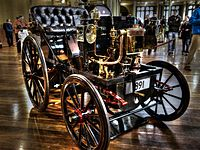

France was a pioneer in the automotive industry and is the 11th-largest automobile manufacturer in the world by 2015 unit production and the third-largest in Europe (after Germany and Spain). It had consistently been the 4th-largest from the end of World War II up to 2000. It is 16 % of sales of French manufactured products. France is home to two major automaking companies: Stellantis (owner of the Peugeot, Citroën, DS and Opel/Vauxhall marques which were originally part of the PSA Group) Renault Group (owner of the Renault, Alpine, Dacia, Renault Samsung Motors marques and 43% of Nissan) the 3rd-largest automaker in Europe and the 10th-largest of the world in 2015.
Additional lesser automotive manufacturers in France include: Bugatti, a luxury marque of the Volkswagen Group headquartered in Molsheim. Venturi, a small sports car manufacturer and Formula E team sponsor. Aixam and Mega, microcar marques of Polaris Industries headquartered in Aix-les-Bains. Microcar and Ligier, microcar marques of DrivePlanet headquartered in Abrest. The France-based Renault Trucks is a major producer of commercial vehicles and is owned by Volvo. Both PSA and Renault produce a large number of vehicles outside France. French automotive manufacturers were long dominant in francophone Africa, but beginning in the 1970s the Japanese were making inroads due to lower prices and the availability of suitable light offroad cars and trucks.[8] French-designed cars have won the European Car of the Year and World Car of the Year awards numerous times. The Citroën DS took third place in Car of the Century award and has been named the most beautiful car of all time by Classic & Sports Car magazine.
